木綿街道でプロジェクションマッピングを見ました。
2024/03/02
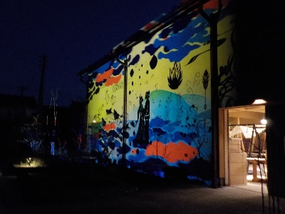
映像と音楽で派手なイベントですが、あまり盛り上がってはいなかったかな？
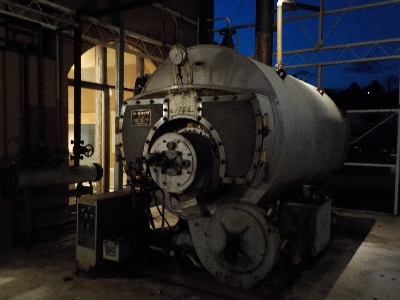
私はどちらかというと夜の風景の方が楽しかったです。
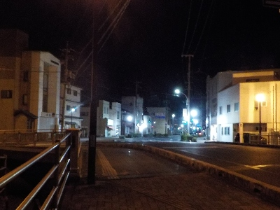
近くの通りです。
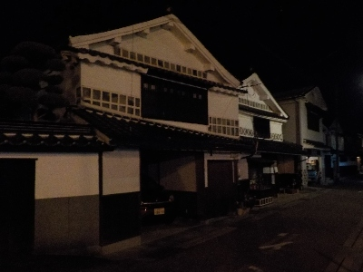
夜の木綿街道はとっても静かで落ち着いていました。
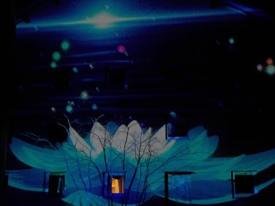
プロジェクションマッピングはドンドン映像が変化していました、変わらない木綿街道との対比を楽しむモノなのかもしれないなと思いました。
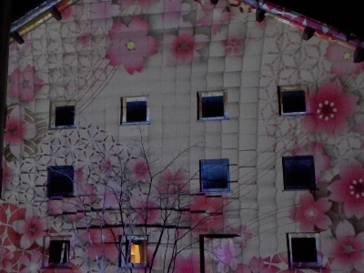
色の発色が良くてキレイでした。こういう技術って今後も進化していくんでしょうね。
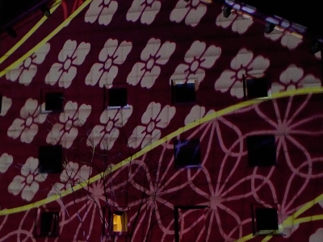
今日は色々見れてよかったです。
木綿街道しょうゆかけご飯に行きました。
2014/11/19
木綿街道の醤油かけご飯のイベントに行ったんですが、食べずに帰っちゃいました。
お客さんが多くて、並ぶ時間が長そうでした。
今回は会場が屋外だったので、いい天気に立ち続けるのはちょっと辛いって思い、あきらめて帰りました。
次行くときは11時ころの空いた時間に挑戦します。
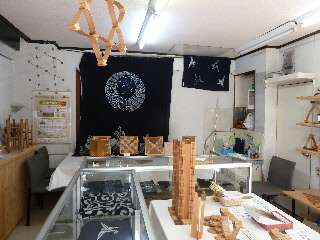
代わりに地元の作品の展示スペースを見て帰りました。
以前は雲州ひらた大物産展でしょうゆご飯イベントをしていたんですが、今回は違うみたいですね。
木綿街道の七色の夜
2012/07/07
木綿街道で七色の夜ってイベントがありました。
七夕にイベントがあるのっていいですね。
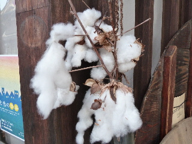
会場は酒石橋でした。
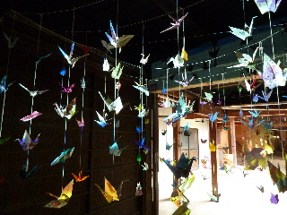
凝った飾り付けが素敵でした。
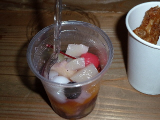
フルーツポンチ100円でした。安くていいですね。
から揚げも100円。そうめん、おにぎり、焼きそば、白玉団子、綿菓子、かき氷、ポップコーン、ビール等、色々ありましたが、みんなお手頃価格でした。
縁日ってことで、風船釣りや金魚すくいなんかもやっていました。
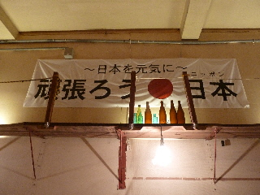
ちょっと照明の暗い感じのイベント会場では、人のよさそうなお兄さんがギターを弾いていました。
子供向けのイベントで、工作のコーナーなんかもありました。
土曜夜市な感じで楽しかったです。
またやって欲しいです。
木綿街道のもち街はいいお天気でした。
2011/02/06
今年もおいしいお餅を沢山いただきました。
一杯100円は安くていいですね。
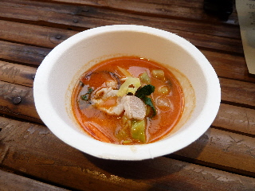
中華料理翠苑さんのタンタンもちです。
こってりした濃いスープとお餅がよく合って、美味しかったです。私はこれが一番美味しく感じました。
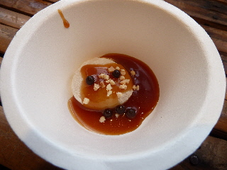
ラルカンシェルさんの塩キャラメルソースとパール・ショコラ添えです。
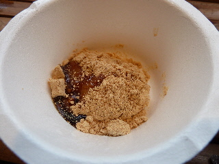
カフェことんさんのきなこ黒蜜もちです。
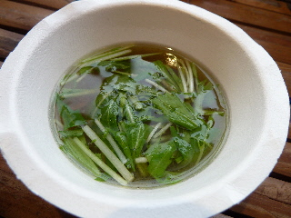
カフェことんさんのさっぱり梅風味雑煮です。
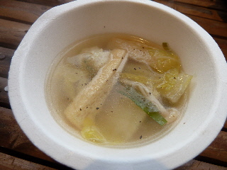
料理以久満さんの鳥ミンチ鍋風雑煮です。
色んな味の美味しいお餅を食べれて楽しいイベントでした。また来年も行きたいです。
木綿街道の節分イベント「もち街」
2010/2/7
木綿街道のイベントに行って来ました。天気がよかったので寒くなく、街歩きが楽しめました。
木綿街道の各お店の会場で、お餅1つ100円で雑煮や磯部巻きが食べれました。
小さめのカップ1杯の雑煮ですが、これで100円は安いですね。
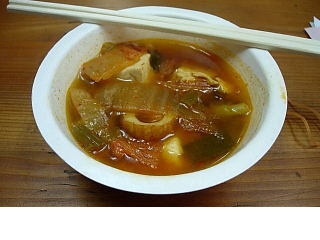
これは韓国風キムチ鍋雑煮です。ちょっとすっぱくて辛いですが、普段食べる事のないお雑煮が食べれて良かったです。体が温まりました。
他にも出西生姜カレー風雑煮、野菜たっぷり赤貝入り粕汁雑煮、ヤマモ特製すまし雑煮を食べました。それぞれ美味しかったですよ。
他にも色んな種類の「お餅」があったので、また今度食べに行きたいと思いました。
おちらと木綿街道
2008/5/25
木綿街道でイベントをしていたので行ってみました。
今日初めて木綿街道を歩いたんですが、狭い所にごちゃごちゃと色々あって、昔の街道らしい雰囲気がして良かったです。狭いところで多くの人が行き交いしていると活気があっていいですね。ちょっとお祭り気分でした。
持田醤油店さんの醤油ソフトを食べたんですが、ちょっと香ばしい感じがして美味しかったです。またここに来たら食べようって思いました。
近くの川では白鳥が泳いでました。
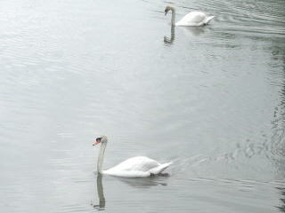
今日は色々見るものがあって面白かったです。街道の一番端にあった宇美神社も良かったです。